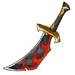
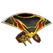
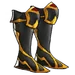
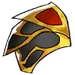
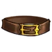
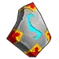
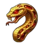

Zoruk is a mercenary you can unlock in the pirate ship.
Abilities
| Eat the Flesh | |
|---|---|
| Rip the flesh of your target, dealing 250% of your damage and healing yourself for 350% of your damage. Cost: 30 Rage. | |
{kind=link}
| Waaaagh! | |
|---|---|
| Increases the armor of all your heroes by 25% while healing them for 150% of your damage every second for 6 seconds. 10 seconds cooldown. Cost: 45 Rage. | |
{kind=link}
{kind=link}
Gear
| Weapon | Chest | Boots | Ring | |
|---|---|---|---|---|
 |
 |
 |
||
| Wrist | Shoulder | Belt | Relic | |
 |
 |
|||
| Ankh | Rune | Idol | ||
 |
 |
|||
| Talisman | Necklace | Trinket | ||
{kind=link}
{kind=link}
{kind=link}
{kind=link}
{kind=link}
{kind=link}
{kind=link}
{kind=link}
{kind=link}
{kind=link}
{kind=link}
{kind=link}
{kind=link}
{kind=link}
Biography
The Soldier of Kramatak
{kind=link}
{kind=link}
The soldier of Kramatak
The air hung heavy with the acrid scent of battle as Alana, a wounded human soldier, stumbled through the dense forest of Eldoria. Her armor was battered, and the echoes of the skirmish still resonated in her ears. Exhausted and bleeding, she fell to her knees, then crawled toward a clearing she saw through her blooded eyes. The grass there felt soft, she noticed, laying on her back, when a dark shadow of a big figure laid upon her brow, covering the dying red sun like a cloud.
Zoruk, an orc shaman, observed the injured human approaching his dwelling. When the soldier crawled and dropped to his back right on Zoruk’s favorite bed of ferns he nurtured for a while now, he snarled and exited the hut, approaching the exhausted unexpected visitor with wariness. He stood over the body, casting the shadow over the soldier. The soldier opened the eyes. And then it struck him - the soldier was a woman!
Alana concentrated and cloud casting the shadow over her transformed into a big orcish head, cocked a bit to a side, as if it was studying her. With a grunt she rolled, got on her knees and tried to pick herself up, leaning on her sword. Zoruk stood silent, she moaned, straightening herself, and the innate hostility between their kind crackled in the air,
Yet something in Alana's desperate gaze stayed Zoruk's instinct to repel the intruder. Despite the mutual animosity, the orc reluctantly pointed to his hut. "Enter, human," Zoruk grumbled, his voice low and guttural, turned her back and went inside. She followed. The hut's interior was dimly lit, adorned with strange symbols and flickering candlelight. A simple set of furniture - a table, a stool, a single sturdy bed in the corner by the fireplace. Orc pointed towards the bed. Alana crashed on it, giving herself to tiredness and warmth of crackling fire. She was fast asleep - or unconscious.
Zoruk gathered some herbs in the garden and threw them into the cauldron. As the water boiled, he added a few dried ones from his storage, then by the quick flick of his ornate dagger cut his palm, adding a few drops of blood to the healing brew, quietly humming and chanting the words of a blood shamanic ritual.
Inside the dimly lit hut, Zoruk, following the ancient arts of blood magic, began tending to Alana's wounds. As the days and nights passed, a wary truce settled between them. The orc, at first perceived by the human as an enemy, revealed his proficiency in the ancient arts of blood magic, guiding Alana's healing with a mixture of incantations and herbal remedies.
One evening, seated by a crackling fire, Alana dared to ask, "Why help me, orc? We are sworn enemies."
Zoruk's eyes, the color of stormy skies, met hers. "Hatred only begets suffering. Gods have their own plans, and perhaps, we are merely pawns in their game."
His words lingered in the air, and as the shadows flickered around them, Alana began to see the orc not just as an enemy but as a complex being bound by his own convictions. The barriers of hostility slowly crumbled, revealing a shared vulnerability that defied the constraints of war.
Weeks passed, and within the quiet sanctuary of the hut, Alana and Zoruk exchanged stories of their worlds. Their conversations, once laced with tension, evolved into moments of shared understanding. As the tales unfolded, the shadows that had once divided them began to blend into a tapestry of shared experiences.
One night, beneath the silver glow of the moon, Alana admitted, "I never thought I'd find friendship in an orc."
Zoruk's gruff laughter echoed through the hut. "Nor did I imagine kinship with a human. Gods weave strange threads, do they not?"
Their laughter resonated in the enchanted night, and within those shared moments, a bond formed – a connection that transcended the boundaries of their warring races. The hut, once a mere refuge, became a haven where two souls found solace in the shadows.
Months passed, and the bonds between Alana and Zoruk deepened. Leaves started to turn yellow, when Alana found herself with a child. When she shared the news with Zoruk, nervous as to how her companion would react, she was stricken by the sheer joy lighting his dark features when he heard the news - and she was overcome by the warmth of his love and the bond of blood which united them.
The tranquility of their quiet happiness was shattered one evening when a regiment of undead, sweeping the area for human bandits, stumbled upon the hut. Zoruk was inside, sorting the herbs, when he heard skeletal shrieks, Alana’s desperate cry and clang of the weapons. He rushed outside, clutching his trusty daggers.
Alana was outside, with her back to the wall of the barn, skillfully parrying with the rake swings of a dozen of undead, each taking a toll on her strength. Zoruk roared and leapt, crushing the closest skeleton with the sheer weight of his body, making his way towards the woman he loved. Alana, drawing on her warrior skills, and Zoruk, channeling the power of blood magic, unleashed a torrent of combined might. They fought back-to-back, but at some moment Zoruk heard a faint sigh over his shoulder. When he turned, he saw Alana’s body slowly falling to the ground, as if the air had left her - and a stream of blood, coming from the deep wound in her grown belly.
Zoruk cried and harked the darkest spell he learned through the years of his shamanic studies.The shadows responded to Zoruk's command, intertwining with the rhythmic pulse of Alana’s blood, leaving her body. Carmine tentacles came from the ground and crushed the rest of the undead force - oh, but it was too late for poor Alana.
She died, smiling silently, in his arms within a few minutes. The overwhelming loss of both his love and his unborn child made Zoruk wail like a banshee. And then she went cold. And he went silent. When he raised his head, he started to chant, committing himself to a blood oath of revenge towards the forces that took everything from him.
He left in the morning, having buried his beloved under an oak tree nearby. His body showed tiredness, but his eyes had a bloody resolution to avenge Alana - and Gods have mercy on any undead in his way.'
The Night Walker


{kind=link}
The night walker
This skin could only be obtained during the March 2026 Decorated Heroes Event.
After Alana’s death, Zoruk’s vow for vengeance echoed louder than any storm Kramatak ever hurled across the skies. In desperation, he sought a strength no orc had claimed before. Zoruk entered the storm-temples where offerings to Kramatak scorched the stone. There, in the god’s crackling silence, he performed a forbidden rite woven from grief, thunder, and his own blood. An oath not for power over storms, but for power over death. Zoruk emerged as the night walker: remade by the force of his own unbreakable will, and until his oath is fulfilled, no creature born of grave or shadow will escape him.